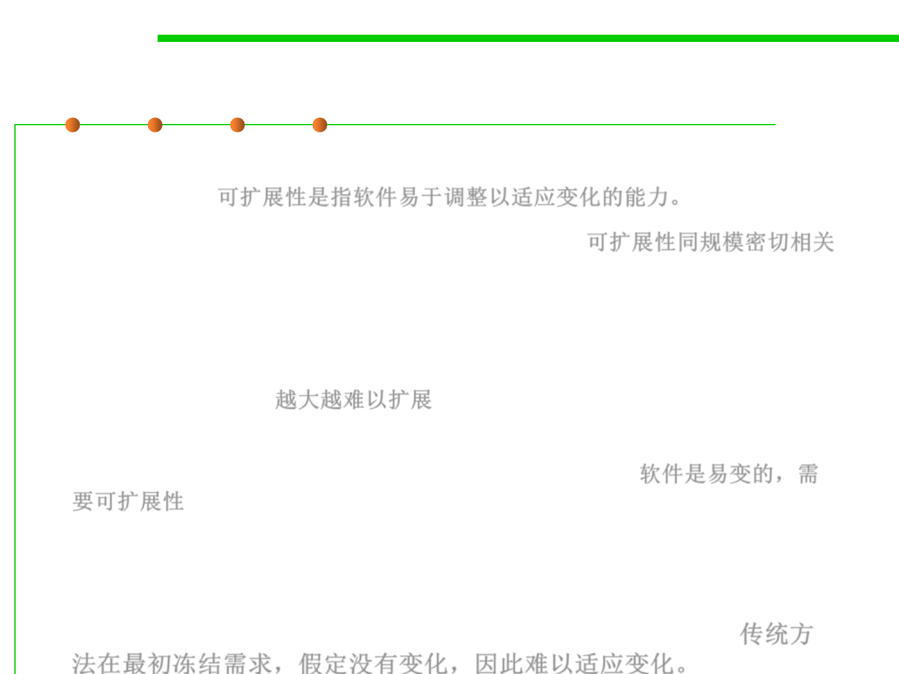

1.2 Quality Objectives of Software Construction
External 3: Extendibility
▪ Extendibility is the ease of adapting software products to changes of
specification.可扩展性是指软件易于调整以适应变化的能力。
▪ The problem of extendibility is one of scale. 可扩展性同规模密切相关
– For small programs change is usually not a difficult issue; but as software
grows bigger, it becomes harder and harder to adapt.
– A large software system often looks to its maintainers as a giant house of
cards in which pulling out any one element might cause the whole edifice(
大厦) to collapse. 越大越难以扩展
▪ We need extendibility because at the basis of all software lies some
human phenomenon and hence fickleness (易变). 软件是易变的，需
要可扩展性
▪ Traditional approaches did not take enough account of change,
relying instead on an ideal view of the software lifecycle where an
initial analysis stage freezes the requirements, the rest of the
process being devoted to designing and building a solution. 传统方
法在最初冻结需求，假定没有变化，因此难以适应变化。